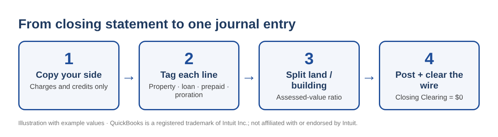
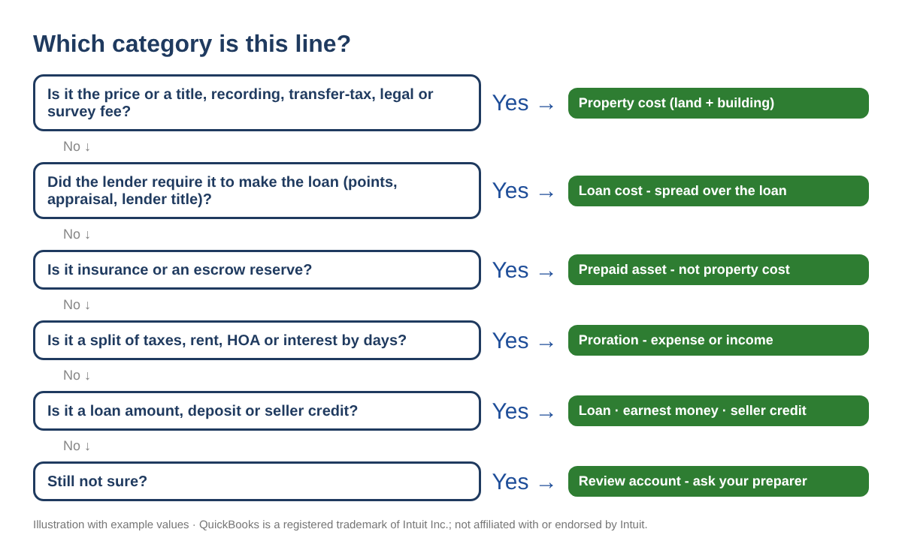
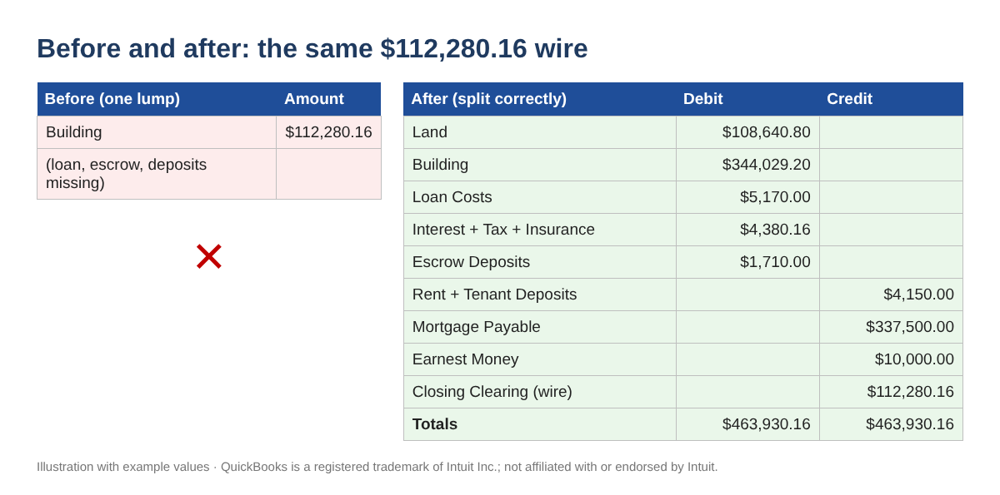

How to Record a Real Estate Closing Statement in QuickBooks (Purchase or Refinance)
↓ Get the free Excel + PDF kit for this article
You bought a building or a rental property, or you refinanced one, and the title company sent a two- or three-page closing statement. Now you have to get it into your books. Most people post the wire amount to a "Building" account and move on, and that one shortcut can leave your balance sheet, depreciation, interest and loan balance wrong for years.
This guide shows a method you can follow by hand in QuickBooks Desktop or QuickBooks Online with a simple spreadsheet. It covers a purchase with a loan, a cash purchase and a cash-out refinance. All numbers in this post are made-up examples.
Why the closing statement is hard to post
A closing statement (a settlement statement, Closing Disclosure or ALTA statement) puts very different things on one page: the price, costs that become part of the property, costs of getting the loan, insurance and escrow paid in advance, and splits of taxes, rent and HOA dues between you and the seller. Each kind goes to a different place in your books:
- Property cost (land + building): the price plus settlement costs such as owner's title insurance, recording fees, transfer taxes, legal fees and surveys (IRS Publication 551).
- Loan costs: points, origination fees, lender-required appraisals and credit reports are not part of the property cost (IRS Pub 551). Points on a rental property loan are generally deducted over the term of the loan (IRS Pub 527).
- Prepaid items: insurance premiums and escrow reserves are assets until they are used.
- Prorations: taxes, rent and HOA dues split by days go to expense or income accounts.
- Balance sheet items: the new loan, earnest money you paid earlier, tenant security deposits you now owe.
Land is never depreciated (IRS Pub 527), so the split between land and building also matters for every future depreciation deduction.

Step 1: Copy your side of the statement into a sheet
Open a blank Excel or Google Sheets file with four columns: Description, Charge to you, Credit to you and Category. Copy only the buyer/borrower columns. Skip the seller's columns, and do not type the final "Cash due from/to borrower" line: that is the total you will check against.
Add the totals and the cash due:
- Total charges: =SUM(B2:B40)
- Total credits: =SUM(C2:C40)
- Cash due from you: =SUM(B2:B40)-SUM(C2:C40) (a negative result means cash you receive, as in a cash-out refinance)
Compare the cash due with the wire on your bank statement. If they differ, you have a missing line, a line in the wrong column, or you typed the total line.
Step 2: Give every line a category
Use one short list of categories so that formulas can add them up. The table below shows the most common wording.
| Wording on the statement | Category | Where it goes |
|---|---|---|
| Contract sales price | Purchase price | Land + Building |
| Owner's title insurance, deed recording, transfer tax, attorney, survey | Cost added to property | Land + Building |
| Seller's back taxes you agreed to pay | Cost added to property | Land + Building (Pub 551) |
| Seller credit / repair credit | Seller credit | Lowers property cost |
| Points, origination fee, lender appraisal, credit report, lender's title policy | Loan cost | Loan Costs (other asset) |
| Prepaid / per-diem interest | Interest | Interest Expense |
| Hazard insurance premium | Insurance prepaid | Prepaid Insurance |
| Initial escrow deposit / reserves | Lender escrow deposit | Escrow Deposits (asset) |
| County taxes the seller paid ahead / seller's share of unpaid taxes | Property tax proration | Property Tax Expense |
| Rent proration / security deposits transferred | Prorated rent / Tenant deposits | Rental Income / Tenant Security Deposits (liability) |
| Loan amount / earnest money / payoff of old loan | New loan / Earnest money / Old loan payoff | Mortgage Payable / Earnest Money Deposit / old Mortgage Payable |
About taxes: if you reimburse the seller for taxes the seller already paid for your part of the year, that amount is usually your deductible tax, not property cost. If you pay taxes the seller owed and the seller does not reimburse you, they become part of your basis (IRS Pub 551). Anything you are not sure about (a home warranty, an inspection, an HOA capital fee) can go to a "Closing Items to Review" account until your tax preparer decides.

Step 3: Total each category and split land and building
With the category in column D, one formula per category gives the net amount (charges minus credits):
- =SUMIFS(B:B,D:D,"Loan cost")-SUMIFS(C:C,D:D,"Loan cost")
- Property cost: the same formula for "Purchase price" + "Cost added to property" + "Seller credit".
- Land share: =LandAssessed/(LandAssessed+BuildingAssessed), using the land and improvement values on your property tax bill. IRS Pub 527 allows the assessed-value ratio when fair market value is uncertain.
- Land: =ROUND(PropertyCost*LandShare,2); Building: =PropertyCost-Land (so the two always add up to the cent).
Here is the result for an example duplex bought for $450,000 with a $337,500 loan, $5,170 of costs added to property, a $2,500 seller repair credit and assessed values of $96,000 (land) and $304,000 (building):
| Account (EXAMPLE) | Debit | Credit |
|---|---|---|
| Land (24%) | 108,640.80 | |
| Building | 344,029.20 | |
| Loan Costs | 5,170.00 | |
| Interest Expense | 936.16 | |
| Property Tax Expense | 1,284.00 | |
| Prepaid Insurance | 2,160.00 | |
| Escrow Deposits (Lender) | 1,710.00 | |
| Rental Income (prorated rent) | 1,150.00 | |
| Tenant Security Deposits | 3,000.00 | |
| Mortgage Payable | 337,500.00 | |
| Earnest Money Deposit | 10,000.00 | |
| Closing Clearing (the wire) | 112,280.16 | |
| Totals | 463,930.16 | 463,930.16 |

Step 4: Post one journal entry and clear the wire
Create the accounts you need first (Land and Building as fixed assets; Loan Costs, Escrow Deposits, Prepaid Insurance, Earnest Money Deposit and a Closing Clearing account as other assets; Mortgage Payable as a long-term liability; Tenant Security Deposits as a current liability).
QuickBooks Desktop
- Lists > Chart of Accounts > Account > New to add missing accounts.
- Company > Make General Journal Entries. Date = closing date; give it an entry number such as CLOSE-2026-01.
- Type each line from your table. Debits must equal credits. Save & Close.
- Record the wire itself (Write Checks, Make Deposits or Bank Feeds) to the Closing Clearing account.
QuickBooks Online
- All apps > Accounting > Chart of accounts > New. For Land and Building choose the account type Fixed Assets; for the others choose Other Assets or the matching current asset or liability type.
- Select + Create, then Journal entry. Set the journal date to the closing date.
- Enter each account on its own line with the amount in Debits or Credits, check that the totals are equal, then Save and close.
- Go to All apps > Accounting > Bank transactions, find the downloaded wire, set its category to Closing Clearing, and select Add (or Post).
Why the clearing account? The wire also arrives through the bank feed. If the journal entry hit the bank account directly and you also added the downloaded wire, the cash would be counted twice. With the clearing account, the journal entry credits Closing Clearing, the bank line debits it, and its balance ends at $0.00. Run a Balance Sheet to confirm.
Refinance: there is no property cost. The new loan is a credit, the old loan principal is a debit to the old Mortgage Payable, payoff interest is interest, lender fees are loan costs, and cash you receive is a debit to Closing Clearing. Example: a $360,000 new loan paying off $330,812.20 of principal gives $22,649.55 cash to you after costs.
Common mistakes
- Posting the whole wire to "Building", leaving the loan off the balance sheet.
- Putting points and lender fees into the building cost.
- Forgetting the earnest money: it was paid weeks earlier and must be cleared out of its deposit account (or moved there first if it was booked as an expense).
- Depreciating land, or skipping the land/building split.
- Recording prorated rent and tenant deposits as nothing, so the first rent check looks like extra income.
- Typing the "cash due" total as a line, which doubles everything.
FAQ
Is the owner's title insurance an expense?
No. IRS Pub 551 lists owner's title insurance as a settlement cost you include in the property's basis. The lender's title policy is a loan cost.
Can I use the purchase contract to split land and building?
The split should follow fair market value. If that is uncertain, IRS Pub 527 lets you use the assessed values for real estate tax purposes. An appraisal can also support the split; ask your tax preparer.
How do I spread the loan costs?
A simple bookkeeping approach is a monthly entry: loan costs divided by the number of months in the loan (example: $5,170 ÷ 360 = $14.36 per month), debit Amortization Expense and credit Loan Costs. Points follow special rules, so your tax preparer may use a different method for the tax return.
What if my wire does not match the statement?
Check for a missing line, an amount in the wrong column, a line copied from the seller's side, or funds sent from two accounts. Each bank line can be categorized to Closing Clearing; the account should still end at $0.00.
Checklist
- ☐ Only your side of the statement was copied; the total line was not typed.
- ☐ Cash due equals the wire on your bank statement.
- ☐ Land and building were split by the assessed-value (or FMV) ratio.
- ☐ Loan costs, prepaid insurance and escrow are separate from property cost.
- ☐ The journal entry is dated on the closing date and debits equal credits.
- ☐ Earnest Money Deposit and Closing Clearing are both $0.00.
- ☐ Your tax preparer has the building cost and the date the property was placed in service.
- ☐ The closing statement PDF is saved with the entry.
You can download the ready-made Closing Statement Journal Entry Builder 2026 for free in the Free kit download box below (Excel + PDF guide, no sign-up).
Disclaimer: This post is educational information, not tax, legal or accounting advice. Rules depend on your facts; confirm the treatment of your property with your tax preparer. All numbers are made-up examples. QuickBooks is a registered trademark of Intuit Inc.; not affiliated with or endorsed by Intuit.
Sources
- IRS Publication 551 (Rev. December 2025), Basis of Assets
- IRS Publication 527 (2025), Residential Rental Property
- Intuit: Create journal entries in QuickBooks Online
- Intuit: Set up an asset account in QuickBooks Online
- Intuit: Categorize online bank transactions in QuickBooks Online
Free kit download
Tools to follow this article step by step. No sign-up needed.
- Step-by-step guide (PDF)Closing_Statement_Guide_Checklist_2026_EN.pdf · 57 KB
- Excel workbook (.xlsx)Closing_Statement_JE_Builder_2026_EN.xlsx · 25 KB
Free to use for yourself and your own business; please do not resell or redistribute. General information, not tax, legal or accounting advice; check every figure against your own records. QuickBooks is a trademark of Intuit Inc.; BIZLEX is not affiliated with Intuit.